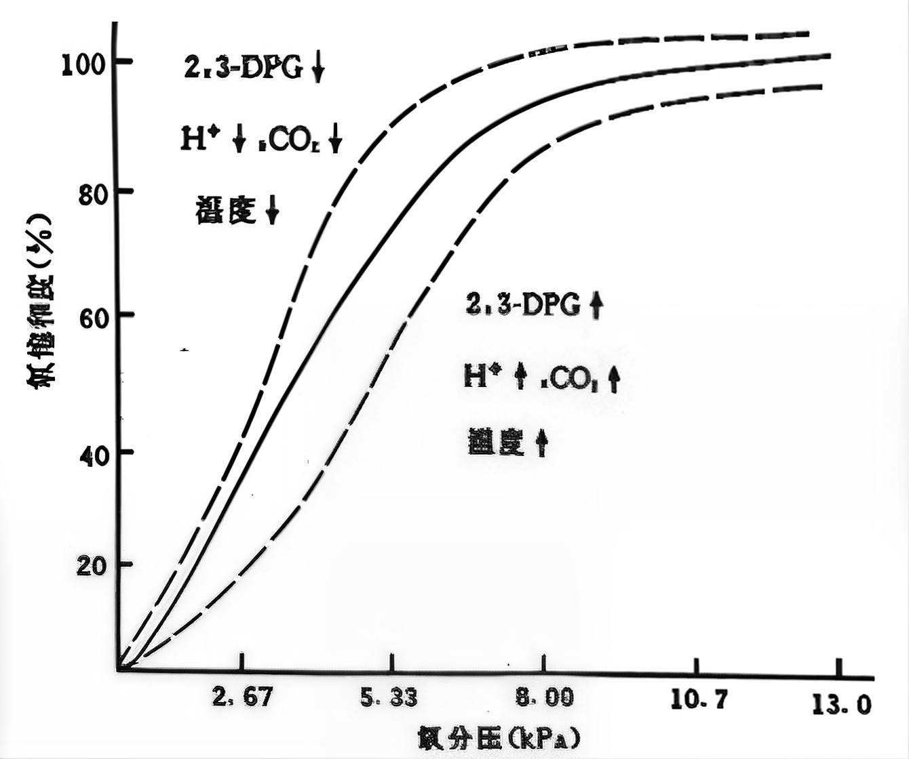

气体交换都是以自由扩散的方式发生的。
O₂运输：约1.5%溶于血浆，98.5%与血红蛋白结合成为氧合血红蛋白。
CO₂运输：
- 物理溶解约5%
- 化学结合：碳酸氢盐约88%（主要在红细胞内由碳酸酐酶催化CO₂+H₂O→H₂CO₃→H⁺+HCO₃⁻，HCO₃⁻扩散到血浆中运输）
- 化学结合：氨基甲酰血红蛋白约7%（Hb-NH₂+CO₂⇌Hb-NHCOOH）
氧离曲线影响因素：
- PO₂升高本身是沿氧离曲线移动；曲线左移由低温、低CO₂、高pH、低2,3-BPG等因素引起（Hb与O₂亲和力增高，易结合）
- CO₂浓度↑ / pH↓ / 温度↑ / 2,3-BPG↑ → 曲线右移（易释放）← Bohr效应
- 小型动物Hb与O₂亲和力比大型动物低（适应高代谢率）
- 胎儿Hb与O₂亲和力比成人高（从母体获取O₂）


记忆口诀：
CO₂运输：5-88-7（溶解-碳酸氢盐-氨基甲酰血红蛋白）
氧离曲线：右移 = 易释放（CO₂↑、pH↓、温度↑、2,3-BPG↑）
左移 = 易结合（CO₂↓、pH↑、温度↓、2,3-BPG↓）
CO₂运输：5-88-7（溶解-碳酸氢盐-氨基甲酰血红蛋白）
氧离曲线：右移 = 易释放（CO₂↑、pH↓、温度↑、2,3-BPG↑）
左移 = 易结合（CO₂↓、pH↑、温度↓、2,3-BPG↓）